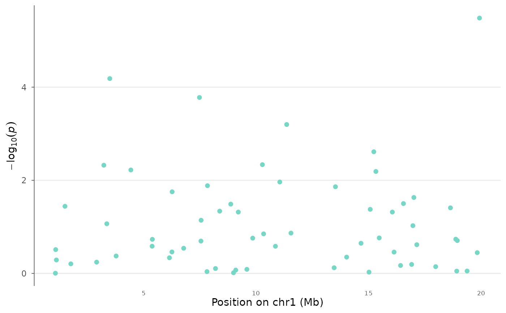

Create a regional association plot centered on a genomic region or lead SNP, with optional LD coloring and gene annotation track.
Usage
locus_plot(
data,
chr = NULL,
bp = NULL,
p = NULL,
snp = NULL,
region_chr = NULL,
region_start = NULL,
region_end = NULL,
lead_snp = NULL,
flank = 5e+05,
ld = NULL,
ld_colors = c("#2166AC", "#67A9CF", "#78C679", "#F4A582", "#D73027"),
ld_breaks = c(0, 0.2, 0.4, 0.6, 0.8, 1),
gene_data = NULL,
gene_height = 0.25,
point_size = 2,
lead_snp_shape = 23,
lead_snp_size = 4,
title = NULL
)Arguments
- data
A
gwas_dataobject or data.frame.- chr, bp, p, snp
Column name overrides.
- region_chr
Chromosome of the region to plot.
- region_start, region_end
Start and end positions.
- lead_snp
SNP ID to center the region around.
- flank
Flank size in bp around the lead SNP (default 500kb).
- ld
Named numeric vector of LD (r2) values with the lead SNP. Names are SNP IDs, values are r2.
- ld_colors
Colors for LD bins (5 levels).
- ld_breaks
Breaks for LD color bins.
- gene_data
A data.frame with columns: chr, start, end, gene, strand.
- gene_height
Proportion of plot height for the gene track.
- point_size
Point size.
- lead_snp_shape
Shape for the lead SNP marker.
- lead_snp_size
Size for the lead SNP marker.
- title
Plot title.
Examples
data(example_gwas, package = "ggwas")
locus_plot(example_gwas, region_chr = 1,
region_start = 1e6, region_end = 20e6)
